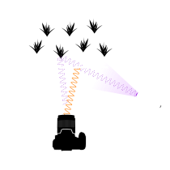
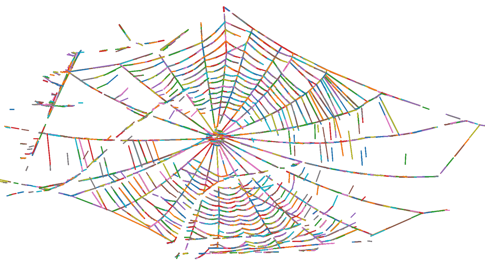

    <!-- Research Section -->
    <section id="research" class="container content-section text-left">
        <div class="row">
            <div class="col-lg-10 col-lg-offset-1">
            <!--FW: original = <div class="col-lg-8 col-lg-offset-2"> -->
                <h2>Research Interests</h2>
                    <p>My research investigates a wide variety of topics within the realm of computational ecology and imaging biology. My current focus is predominantly on spider web imaging and web traits.</p>
                    <p>My work is largely theoretical and computational, but also includes lab and fieldwork as the empirical foundation. I look to improve current methods of data generation, analysis, and visualisation, incorporating my experience as a graphic designer and in software development.</p>
                <h3>Novel imaging methods</h3>
                    <p>Imaging concepts and techniques are important in ecology and in biology more generally. Camera trapping, camouflage, biomimicry, vision, colouration, and structural analysis all have major elements of image generation and analysis. I am very interested in designing and testing new methods to extract this sort of data in the field and the lab, with a current focus on spider web imaging. In my recent paper "Improving in-situ spider web photography with UV fluorescence" (in review), I developed a modification to the established night-sampling techniques used to photograph spider webs in the field. I exploited the phenomenon of UV fluorescence to force silk strands to glow in the visible light spectrum while excluding any UV light reflected from the background with a UV filter. This notably improved contrast within photos, leading to much better distinction between webs and their backgrounds.</p>
                
                <h3>Image analysis pipelines</h3>
                    <p>I usually take a mechanistic approach to image analysis: I start from the physical fundamentals of how the features of an image are created and use that knowledge to design analyses that extract the traits we are interested in. Part of my current work in my PhD focuses on automating the process of extracting functional traits from images of spider webs. This has historically been a slow and manual process, but our methods are around 52x faster and create digitisation outputs that are more data-rich.</p>
                
                <h3>Computational ecology methods</h3>
                <h3>Spider web traits</h3>
                
                <h3>Other research interests</h3> <!--//thermal performance-->
            </div>
        </div>
    </section>
